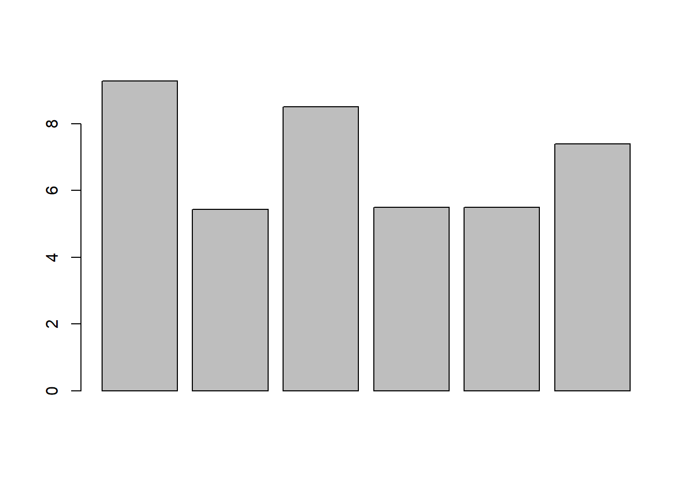

raw_data = read.csv("Salut_Vocal_anonimizada.csv", header=TRUE, encoding = 'UTF-8', stringsAsFactors=FALSE, sep=';')Practica 2
Carles Westendorf Vidal, Javier Cisneros Serra, Gabriel Morales Cardona
Respondiendo a la pregunta 5: ¿Hay alguna enfermedad que influya en la calidad de voz? EPOC, reflujo, endocrina, cardio-vascular, etc.
Correo Daniel Covacho: dcovacho@gmail.com
str(raw_data)'data.frame': 185 obs. of 38 variables:
$ ID : int 1 2 3 4 5 6 7 8 9 10 ...
$ De.l.1.al.10.quina.importancia.té.la.veu.per.a.vostè. : int 10 10 10 10 10 10 9 9 10 10 ...
$ Sexe : chr "Femení" "Femení" "Masculí" "Femení" ...
$ On.fa.feina. : chr "Palma, Llucmajor, Algaida, Santa Eugènia, Marratxí, Santa Maria, Bunyola, Fornalutx, Sóller, Deià; Valldemossa,"| __truncated__ "Palma, Llucmajor, Algaida, Santa Eugènia, Marratxí, Santa Maria, Bunyola, Fornalutx, Sóller, Deià; Valldemossa,"| __truncated__ "Inca, Sa Pobla, Pollença, Alcúdia, Muro, Santa Margalida, Maria de la Salut, Sineu, Llubí, Costitx, Lloret, Sen"| __truncated__ "Palma, Llucmajor, Algaida, Santa Eugènia, Marratxí, Santa Maria, Bunyola, Fornalutx, Sóller, Deià; Valldemossa,"| __truncated__ ...
$ Cos.docent : chr "Formació Professional" "Educació Secundària" "Educació Secundària" "Educació Secundària" ...
$ Quina.edat.té. : chr "Entre 36 i 50" "Entre 36 i 50" "Entre 36 i 50" "Entre 51 i 65" ...
$ Practica.esport.o.fa.alguna.activitat.física. : chr "Més de 150 min. per setmana" "Més de 150 min. per setmana" "Més de 150 min. per setmana" "Menys de 150 min. per setmana" ...
$ De.l.1.al.10.quina.importancia.té.la.pràctica.de.l.esport.o.activitat.física.per.a.vostè. : int 10 10 10 8 10 10 10 7 10 10 ...
$ Té.una.bona.qualitat.del.son. : chr "Dorm bé i em despert descansat" "Dorm bé però no em despert descansat" "Em despert uns quants cops a la nit" "Dorm bé i em despert descansat" ...
$ Consumeix.cafè. : chr "Diàriament" "Ocasionalment" "Diàriament" "Diàriament" ...
$ Consumeix.tabac. : chr "Diariament" "No" "No" "Anteriorment (exfumador)" ...
$ Consumeix.alcohol. : chr "Ocasionalment" "Ocasionalment" "Setmanalment" "Setmanalment" ...
$ Consumeix.begudes.amb.gas. : chr "Mai" "Ocasionalment" "Diàriament" "Ocasionalment" ...
$ De..l.1.al.10.assenyali.si.segueix.una.dieta.equilibrada.i.saludable. : int 8 6 9 6 10 10 8 8 8 8 ...
$ Ha.estat.diagnosticat.per.un.metge.o.metgessa.d.alguna.de.les.malalties.següents. : chr "Cap de les esmentades anteriorment" "Cap de les esmentades anteriorment" "Cap de les esmentades anteriorment" "Cap de les esmentades anteriorment" ...
$ Si.ha.marcat.alguna.de.les.opcions.anterior..especifiqui.la.patologia. : chr "" "" "" "" ...
$ Ha.estat.diagnosticat.per.un.especialista.mèdic..otorinolaringòleg..foniatra..d.alguna.lesió.a.les.cordes.vocals. : chr "No" "Si" "No" "Si" ...
$ Aquest.mes.ha.tengut.algún.símptoma.vocal.dels.següents..Es.pot.marcar.més.d.una.opció : chr "Mucositat" "Fatiga vocal" "Veu ronca, escanyada" "Mucositat" ...
$ L.han.operat.de.les.cordes.vocals. : chr "No" "No" "No" "No" ...
$ Si.té.alguna.alteració.de.la.veu..recorda.quin.temps.fa.que.va.començar. : chr "No tenc cap alteració de la veu." "Va començar fa menys de 2 anys" "No tenc cap alteració de la veu." "No tenc cap alteració de la veu." ...
$ En.alguna.ocasió..ha.estat.de.baixa.laboral.per.problemes.de.veu. : chr "No, mai he estat de baixa per un problema de veu" "Si, he tengut alguna o algunes baixes per problemes de veu" "No, mai he estat de baixa per un problema de veu" "No, mai he estat de baixa per un problema de veu" ...
$ Si.la.resposta.a.la.pregunta.anterior.és.afirmativa..indiqui.la.periodicitat..cada.any..trimestre.....i.la.durada.de.la.baixa.més.llarga.i.la.malaltia: chr "" "El curs escolar passat. Una setmana sencers sense veu (afonia) no m’he donat de baixa però no em surtia la veu" "" "" ...
$ Ha.tengut.problemes.de.veu.importants.i.que.li.han.dificultat.la.feina.al.llarg.del.curs.2022.2023. : chr "No" "Si" "Si" "No" ...
$ Té.formació.sobre.salut.vocal. : chr "Si, vaig fer un curs fa temps" "No, mai he fet cap formació" "No, mai he fet cap formació" "No, mai he fet cap formació" ...
$ Pren.alguna.o.algunes.de.les.medicacions.següents..Es.pot.marcar.més.d.una.opció : chr "Aspirina i antiinflamatoris no esteroideus" "No" "Vitamina C" "Antidepressius (fluoxetina i amitriptilina)" ...
$ Segueix.una.rutina.d.higiene.vocal. : chr "No seguesc cap rutina per a la veu" "No seguesc cap rutina per a la veu" "No seguesc cap rutina per a la veu" "Bec molta d'aigua" ...
$ Fa.alguna.de.les.activitats.següents..Es.pot.marcar.més.d.una.opció : chr "No faig cap activitat amb exigència vocal extra" "Som entrenador esportiu" "No faig cap activitat amb exigència vocal extra" "No faig cap activitat amb exigència vocal extra" ...
$ La.gent.em.sent.amb.dificultat.a.causa.de.la.meva.veu : chr "Mai" "Mai" "Mai" "Gairebé sempre" ...
$ La.gent.no.m.entén.en.llocs.sorollosos : chr "Mai" "A vegades" "Gairebé sempre" "Gairebé sempre" ...
$ Els.meus.problemes.amb.la.veu.alteren.la.meva.vida.personal.i.social : chr "Mai" "A vegades" "A vegades" "Gairebé mai" ...
$ Em.sent.desplaçat.de.les.converses.per.la.meva.veu : chr "Mai" "Mai" "Mai" "Gairebé mai" ...
$ El.meu.problema.amb.la.veu.afecta.el.rendiment.laboral : chr "Mai" "A vegades" "Gairebé mai" "Mai" ...
$ Not.que.necessit.tensar.la.gola..gargamella..per.produir.la.veu : chr "Mai" "A vegades" "Mai" "Mai" ...
$ La.qualitat.de.la.meva.veu.és.imprevisible : chr "Mai" "Mai" "Mai" "Mai" ...
$ La.meva.veu.em.molesta : chr "Mai" "Mai" "Mai" "Mai" ...
$ La.meva.veu.em.fa.sentir.certa.minusvalidesa : chr "Mai" "Mai" "Mai" "Mai" ...
$ La.gent.em.pregunta..què.et.passa.amb.la.veu. : chr "Mai" "Mai" "Mai" "Mai" ...
$ X : logi NA NA NA NA NA NA ...nomsColumnes= c("ID", "Import_veu", "Sexe", "Lloc_Feina", "cos_docent", "edat", "practica_esport", "import_esport", "qualitat_son", "consum_cafe", "consum_tabac", "consum_alcohol", "consum_gas", "dieta_equil", "malalties", "patologia", "diagnosticat", "sintomes_darrerMes", "operat_cordes", "inici_alteracio", "baixa_laboral", "detalls_baixa", "problemes2223", "formacio_saludVocal", "consum_medicaments", "rutina_higiene", "activitats_oci", "a", "b", "c", "d", "e", "f", "g", "h", "i", "j", "total")
data <- as_tibble(raw_data)
colnames(data) <- nomsColumnes
data <- data %>% mutate("nueva1"=factor(a, levels=c("Mai", "Gairebé mai", "A vegades", "Gairebé sempre", "Sempre"), labels= c(0,1,2,3,4)))
data <- data %>% mutate("nueva2"=factor(b, levels=c("Mai", "Gairebé mai", "A vegades", "Gairebé sempre", "Sempre"), labels= c(0,1,2,3,4)))
data <- data %>% mutate("nueva3"=factor(c, levels=c("Mai", "Gairebé mai", "A vegades", "Gairebé sempre", "Sempre"), labels= c(0,1,2,3,4)))
data <- data %>% mutate("nueva4"=factor(d, levels=c("Mai", "Gairebé mai", "A vegades", "Gairebé sempre", "Sempre"), labels= c(0,1,2,3,4)))
data <- data %>% mutate("nueva5"=factor(e, levels=c("Mai", "Gairebé mai", "A vegades", "Gairebé sempre", "Sempre"), labels= c(0,1,2,3,4)))
data <- data %>% mutate("nueva6"=factor(f, levels=c("Mai", "Gairebé mai", "A vegades", "Gairebé sempre", "Sempre"), labels= c(0,1,2,3,4)))
data <- data %>% mutate("nueva7"=factor(g, levels=c("Mai", "Gairebé mai", "A vegades", "Gairebé sempre", "Sempre"), labels= c(0,1,2,3,4)))
data <- data %>% mutate("nueva8"=factor(h, levels=c("Mai", "Gairebé mai", "A vegades", "Gairebé sempre", "Sempre"), labels= c(0,1,2,3,4)))
data <- data %>% mutate("nueva9"=factor(i, levels=c("Mai", "Gairebé mai", "A vegades", "Gairebé sempre", "Sempre"), labels= c(0,1,2,3,4)))
data <- data %>% mutate("nueva10"=factor(j, levels=c("Mai", "Gairebé mai", "A vegades", "Gairebé sempre", "Sempre"), labels= c(0,1,2,3,4)))
data <- data %>% mutate(total= as.numeric(nueva1) + as.numeric(nueva2) + as.numeric(nueva3) + as.numeric(nueva4) + as.numeric(nueva5) + as.numeric(nueva6) + as.numeric(nueva7) + as.numeric(nueva8) + as.numeric(nueva9) + as.numeric(nueva10)-10) Anàlisi.
Para comprobar si alguna enfermedad influye en la calidad de voz, cargaremos subtablas con solo con los individuos que padezcan cada patología y compararemos los indices de las últimas preguntas.
gastrointestinal <- data %>% filter(malalties=="Gastrointestinal (Refluix gastro-esfofàgic")
endocrina <- data %>% filter(malalties=="Endocrina")
esquena <- data %>% filter(malalties=="Patologia d'esquena crónica")
pulmonar <- data %>% filter(malalties=="Pulmonar (asma, al·lèrgia, EPOC)")
cardio <- data %>% filter(malalties=="Cardio-vascular")
ansio <- data %>% filter(malalties=="Patologia ansio-depresiva crónica")
cap <- data %>% filter(malalties=="Cap de les esmentades anteriorment")A continuación, comparemos las medianas de la evaluación de la voz de cada grupo: NÓTESE que el grupo gastrointestinal no ha obtenido ninguna respuesta. Por esa razón no podemos compararlo
medianas <- c(
mean(endocrina$total),
mean(esquena$total),
mean(pulmonar$total),
mean(cardio$total),
mean(ansio$total),
mean(cap$total)
)
noms_comparats = c("endocrina", "esquena", "pulmonar", "cardio", "ansio", "cap")barplot(medianas)